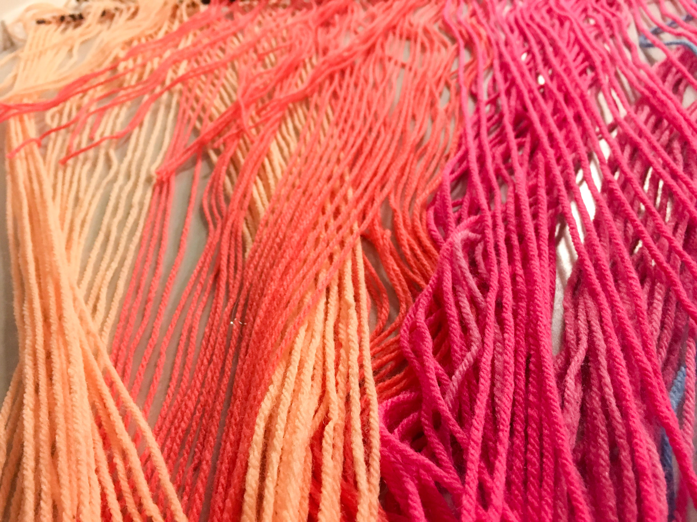
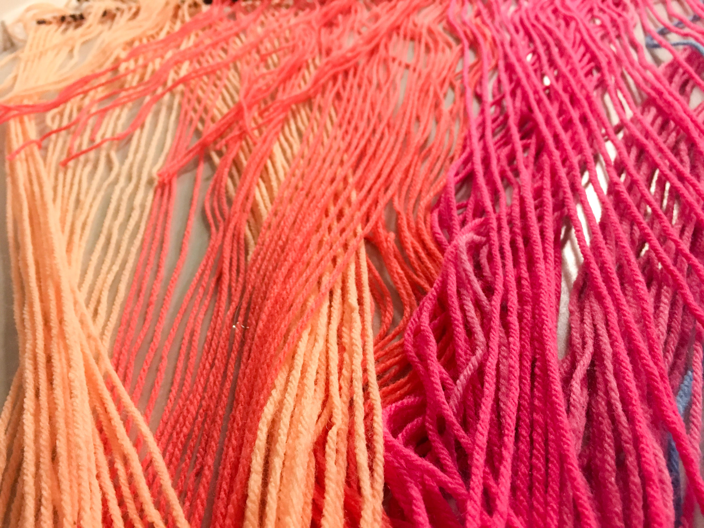
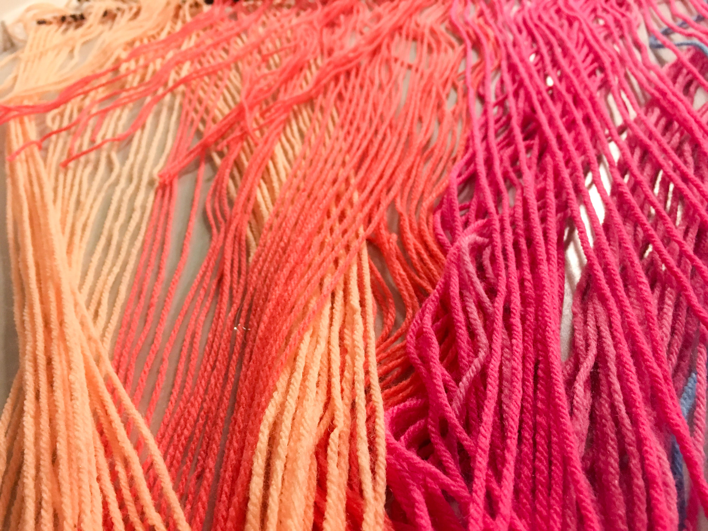

Over the past few months our class has been hard at work designing our senior show experience. With this project we have been able to dip our toes into just about everything from branding, photography, film, exhibition, UI/UX, and social media. This has stretched us as designers as we have been experimenting with new techniques and developing new skills to broaden our perspectives on reaching new audiences. Here, we’ve documented our process throughout the semester and wanted to bring you along!
